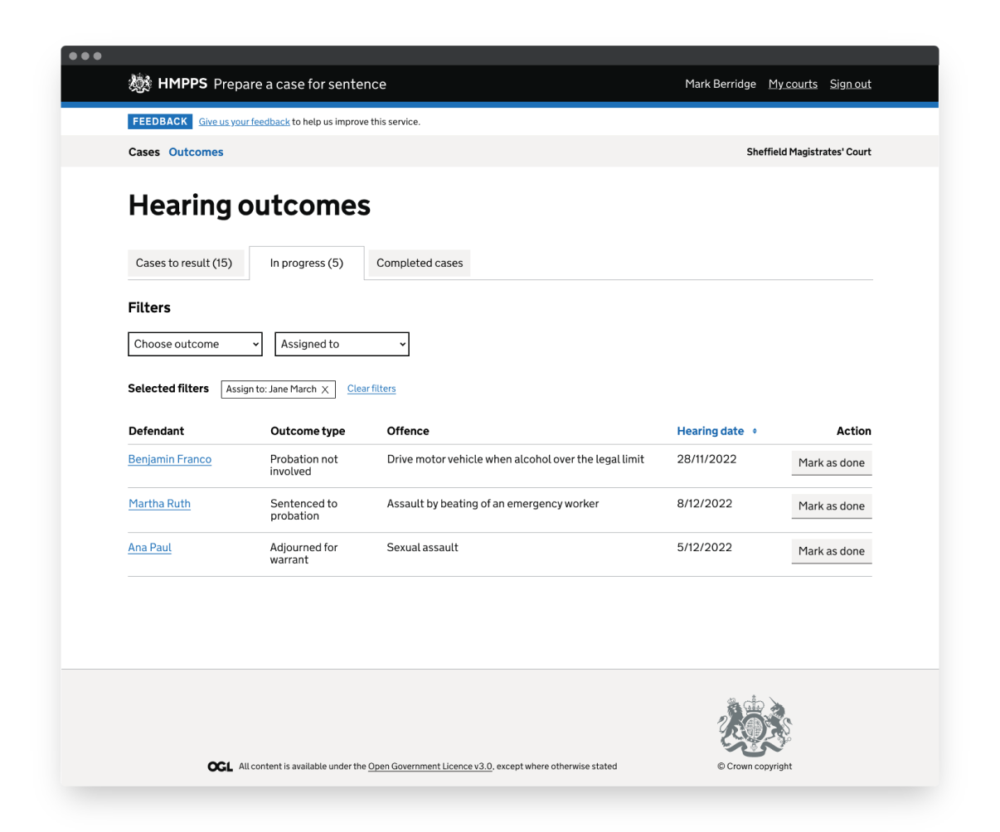
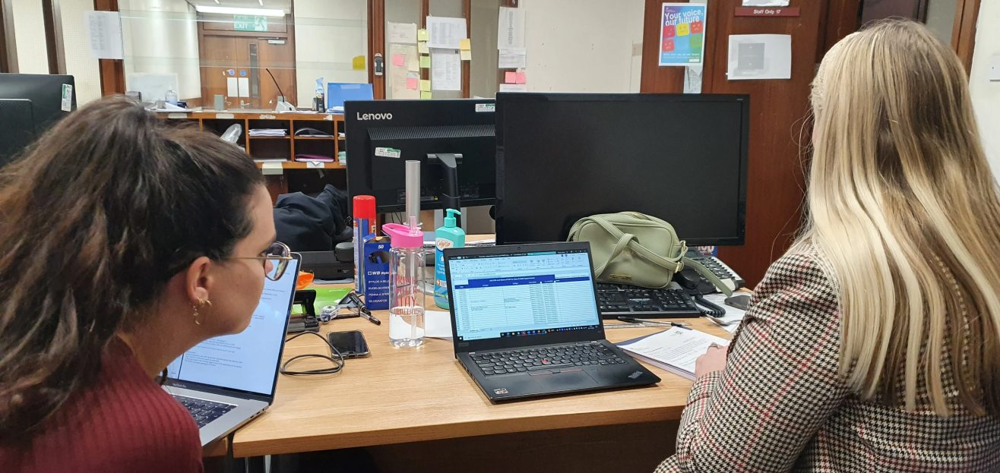
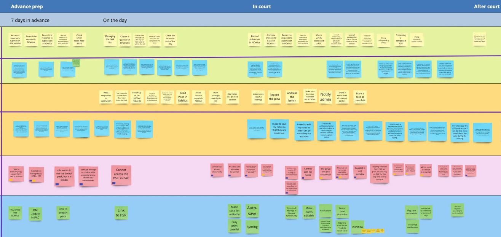
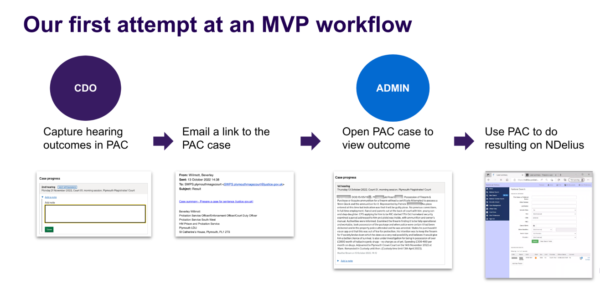
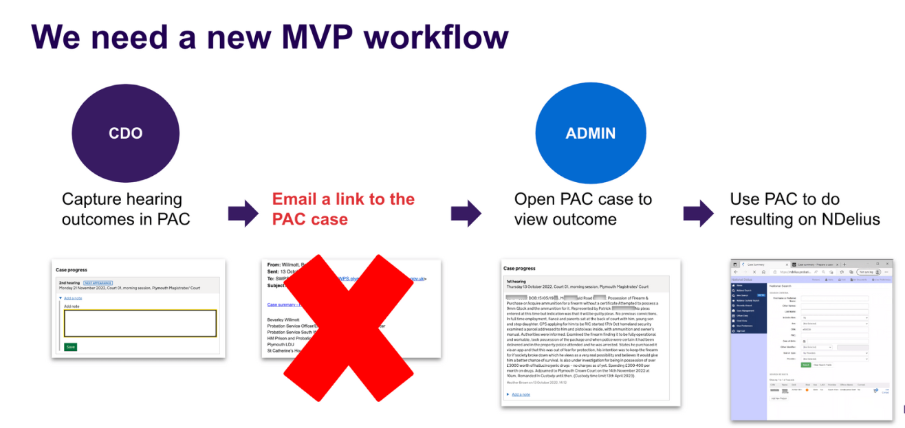
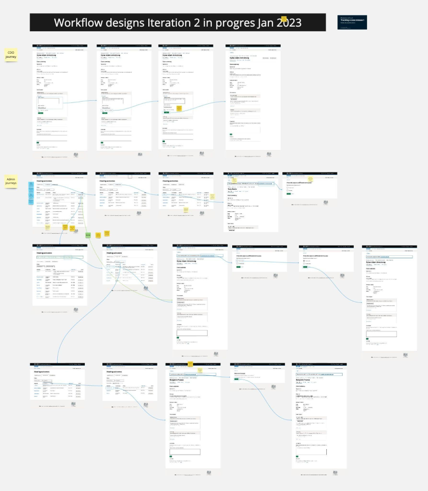
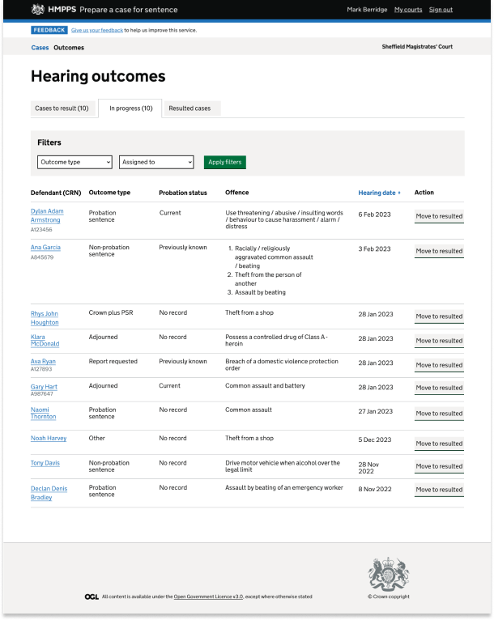

Prepare a Case for Sentence, HMPPS
Helping probation officers get ready for court
Evolving a view-only service into an interactive court case tracker
Prepare a Case for Sentence shows every person appearing in court on a given day. If they have already been looked after by probation, the service shows data about their current or previous offences, orders and risk. It is used by court probation staff and court administrators. I joined the team when the service went into private beta, and since then I have helped evolve it from a read-only service into a transactional one.
- Role
- Interaction design
- Client
- Ministry of Justice
- Year
- 2021 to 2023
- Skills used
- Interaction design
- Prototyping


The problem
Probation practitioners and administrators are tracking cases through court manually, on paper or with basic digital tools. This makes the data hard to manage and puts a large administrative burden on courts. As courts are encouraged to process more cases more quickly because of growing backlogs, these difficulties are likely to get worse. There’s an opportunity to make things easier for probation staff in court.
How might we make it easier for court probation staff to process cases from first appearance to sentencing?
Key facts
- Every court works differently. There is no standard way of tracking cases, and some courts, like Bristol, don’t track them at all.
- Probation teams are understaffed and working at, or most likely over, capacity.
- Wifi in courts is patchy and unreliable.
- One of Probation Digital’s goals is to reduce the administrative burden on probation practitioners.
The process


The user researcher and I started with in-person observational research in six courts across the country, to understand the current process. From there, we uncovered the user needs that shaped our design hypothesis.


We also met our stakeholders, the Central Court Team, to understand business needs and requirements.
We recognised this was a mammoth project, and the work and change could be overwhelming for both the team and our users. To manage this and work in an agile way, the user researcher and I developed a release plan, supported by our main design hypothesis.
Design hypothesis
By giving probation practitioners a way to add information to a case, see cases in the past and share a case with a colleague, we will be able to replace paper case trackers.
Our design hypothesis broke the work down into four main features:
- Case comments. We expected admin to use this feature to add notes about how the case is being dealt with, adding bits of information throughout the case’s life cycle.
- Hearing progress. We displayed a timeline of all the hearings, with a way to add notes to each one. We expected court duty officers to type notes as the hearing unfolded, based on our observational research.
- Past navigation. For those notes and comments to be found, users would need an easy way to get back to those cases.
- Court admin and court duty officers could use email as a way of sharing cases with each other.



Iterating the designs
Case comments, hearing progress and past navigation were validated. Sharing cases by email failed: we learned that email was not a viable way to tell admin about progress on a case, as staff received dozens of emails an hour.


Based on this insight, we moved away from email as the main way of sharing cases and developed a dashboard that let admins manage their workload. We called this “the workflow”.
Through three rounds of research over three months, we refined this approach until we were confident it met our users’ needs and provided a minimum viable product.
This was our riskiest piece of design, so testing its boundaries was extremely important.
Keeping in mind that all courts would eventually have to adopt our new system, we researched and validated it with dozens of users who tracked their cases in a variety of ways.





The outcome
The first three features went live in 150 courts across England and Wales, after a short pilot with Liverpool and Plymouth. They’ve been providing great value to users, and adoption has been really positive.
The workflow was piloted with three courts of different sizes, and the service went live in its entirety in March 2024. Satisfaction with the service rose by 48%.
This project was challenging on many levels. It pushed me outside my comfort zone and required me to develop new skills as a designer.
- Starting simple and small. Developing a new workflow for two groups of users while keeping a “start simple and small” mentality was incredibly complex. Applying agile methods without allowing scope creep was a challenge.
- Designing for multiple contexts. Some of our users are in court, where wifi is patchy, so the designs for them were one-pagers, with less chance of losing signal while clicking between tabs. Court admin look at large amounts of data that needs prioritising, so for them I focused on an organised, customisable interface, so they could decide how best to do their tasks.
- Wearing a product manager’s hat. I decided on the prioritisation of features, how best to break down the work, and what “good enough” looks like for a service that would have no further iterations.
User feedback
“As far as workloads go, this would do away with all the trackers. With one for each case that comes in, you can imagine it’s a lot of work. This will be a live system, we won’t miss anything because it’s all there live. That’s the beauty of this: it removes human error from typing between systems.”
Probation officer
“It’s so much easier. All the things that I pretty much need are here, rather than jumping back and forth to different systems all the time.”
Court administrator